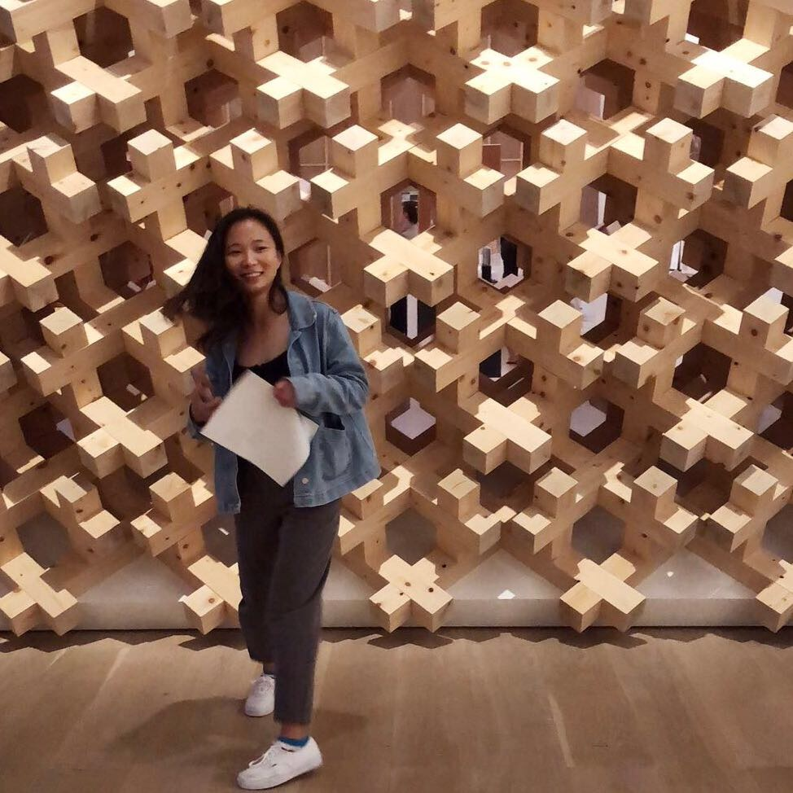

Disi Ji

Ph.D. Candidate
Department of Computer Science
University of California, Irvine
4202 Donald Bren Hall
Irvine, CA 92617
disij AT uci DOT edu
About
I am a Ph.D. student in the Computer Science Department at the University of California, Irvine. Padhraic Smyth is my advisor.
My research interest is in probabilistic machine learning and statistics. In particular, I am interested in understanding uncertainty and robustness of deep learning and probabilistic models, and their applications to medical data.
[1,
2]
Currently I am working on developing new theories and techniques that bridge statistical ideas with methods from deep learning, such as active Bayesian assessment of black-box classifiers [3]
and online probabilistic calibration for deep neural networks.
I've done internships at Google Cambridge and Facebook New York. I graduated from Department of Mathematics at Fudan University (Shanghai, China) in 2015.
Research
Preprints
-
Active Bayesian Assessment for Black-Box Classifiers.
Disi Ji, Robert Logan, Padhraic Smyth, Mark Steyvers.
[preprint]
[code]
Publications
-
Optimization of Automated Gating for Clinical Diagnosis using Discriminative Gates.
Disi Ji, Preston Putzel, Yu Qian, Richard Scheuermann, Jack D. Bui, Huan-You Wang, and Padhraic Smyth.
Cytometry: Part A, 2019
[Journal]
[Link to journal]
[code]
-
Bayesian Trees for Automated Cytometry Data Analysis.
Disi Ji, Eric Nalisnick, Yu Qian, Richard Scheuermann, Padhraic Smyth.
In Proceedings of Machine Learning for Healthcare (MLHC), Palo Alto, USA, Aug 16-18 2018.
[Conference, Oral]
[Link to proceedings]
[poster]
[code]
Workshop Papers
-
Bayesian Evaluation of Black-Box Classifiers.
Disi Ji, Robert Logan, Padhraic Smyth, Mark Steyvers.
ICML Workshop on Uncertainty and Robustness in Deep Learning, Long Beach, USA, June 14, 2019. [Spotlight talk]
[pdf]
[poster]
-
Learning Discriminative Gating Representations for Cytometry Data.
Disi Ji, Preston Putzel, Yu Qian, Richard Scheuermann, Jack D. Bui, Huan-You Wang, and Padhraic Smyth.
ICML Workshop on Computational Biology, Long Beach, USA, June 14, 2019.
[poster]
-
Mondrian Processes for Flow Cytometry Analysis.
Disi Ji , Eric Nalisnick, and Padhraic Smyth.
Machine Learning for Health, Workshop at NIPS 2017, Long Beach, USA, December 8, 2017.
[pdf]
Medical Abstracts
-
Differentiable Gates: Automated Gating for Clinical Diagnosis using Supervised Machine Learning.
Disi Ji, Preston Putzel, Yu Qian, Richard Scheuermann, Jack D. Bui, Huan-You Wang, and Padhraic Smyth.
CYTO, Vancouver, Canada, June 22- 26, 2019. [Medical abstract]
-
Interpretable Automated Gating and Classification of Mass Cytometry Data using Machine Learning and Expert Knowledge.
Disi Ji, Eric Nalisnick, Yu Qian, Richard Scheuermann, Padhraic Smyth.
CYTO, Prague, Czech, April 28- May 2, 2018. [Medical abstract]
-
Computational analysis of cytometry data using the FlowGate cyberinfrastructure.
Yu Qian, Ivan Chang, Peter Acs, Holden T. Maecker, Michael Reich, Robert Sinkovits, Disi Ji, Padhraic Smyth, Kim Lu, Frank Zaldivar, Dan Cooper, Jill Mesirov, Richard Scheuermann.
CYTO, Prague, Czech, April 28- May 2, 2018. [Medical abstract]
Academic Service
- PC member, Bayesian Deep Learning Workshop, NeurIPS 2019
Teaching
- Teaching assistant: COMPSCI 260 Fundamentals of the Design and Analysis of Algorithms, 2020 Winter
- Teaching assistant: COMPSCI 273A Machine Learning, 2019 Fall
- Instructor: Deep learning with Python, Data Science Initiative Workshop
- Reader: COMPSCI 161 Design and Analysis of Algorithms